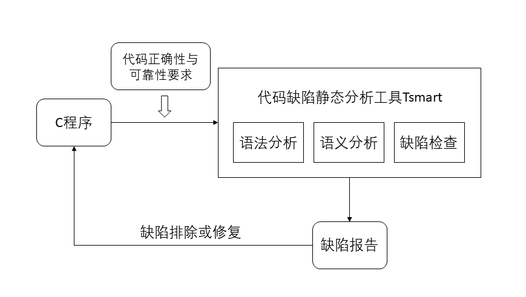
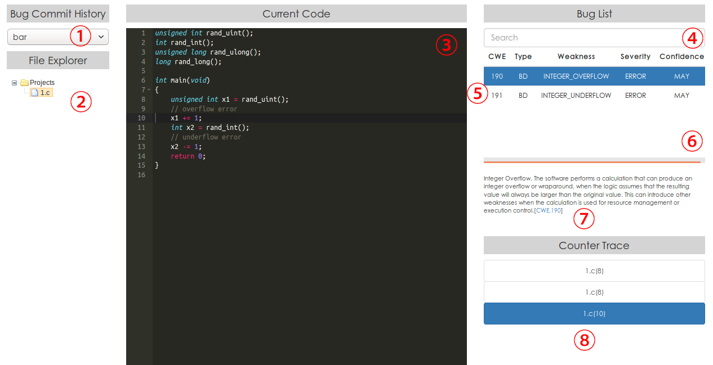

Tsmart是一个分析代码缺陷的静态分析工具，可以用于C语言编写的程序源代码进行检测分析，从而给出一个缺陷分析报告。
静态分析是指在不运行代码的方式下，通过语法分析、词法分析、控制流、数据流分析等技术对程序代码进行扫描，从而验证程序代码是否满足规范性、安全性、可靠性、可维护性等指标的一种代码分析技术。
软件项目的编写过程中，有时候代码虽然能够通过编译器的编译和小规模的测试，但是其中仍然可能存在一些隐患。通过程序分析，在这些隐患产生影响之前将其修复，是一个非常具有实际意义的工作。用户可以通过使用Tsmart对编写的源代码进行分析，并且根据反馈报告对源代码进行修改。如此反复的迭代，就可以逐步消除软件项目中源代码的潜在缺陷，从而提高代码的准确性和稳定性。
下图给出了一个Tsmart的实际使用场景：

Tsmart主要提供了一个软件静态分析的入口。用户需要指定待检测的项目的路径，需要满足的编码规范（即需要检测缺陷类型），以及检测报告的输出路径。之后Tsmart工具会按照用户指定的参数，自动地对待检测项目进行分析检测，并且生成一份便于阅读的检测报告。
根据实际需求的不同，Tsmart的功能可以大致分为以下3种：
| # | 术语 | 定义 |
|---|---|---|
| 1 | 单文件检查 | Tsmart对C语言源代码文件检查方式的一种。对于单个独立的C文件进行检测，依据预设的参数要求观察其是否具有潜在的缺陷，并且将其汇报出来 |
| 2 | 编译抓取 | 将Makefile的编译指令替换为相应的预处理指令，以得到预处理后的一个或多个对应与Makefile编译目标的分析任务 |
| 3 | 任务 | 由一个或多个预处理后的源码文件组成的，对应于Makefile编译目标的分析对象 |
| 4 | 复合项目检查 | 对基于Makefile编译环境的C程序进行检查 |
| 5 | 分析阶段 | 与静态分析相关的不可分割的工作环节，常见的分析阶段包括程序解析、程序分析、结果处理等 |
| 6 | CWE | Common Weakness Enumeration（中文名：常见缺陷枚举）。一种国际范围内免费使用的一套统一的，可度量的软件缺陷描述体系。该体系内每一种缺陷都具有独立的编号和与之对应的名称和定义。以下也将该描述体系内的一种缺陷简称为CWE |
| 7 | 数据流分析 | 一种用于收集计算机程序在不同点的计算值的分析方法。采用程序的控制流图来确定对于变量的一次赋值可能传播到程序的哪些部分 |
| 8 | 抽象解释 | 一种程序分析方法框架，基于有序集合（特别是格）上的单调函数，以及计算程序语义的可靠近似。它可以被看做是对计算机程序的抽象分析，并且能在不进行所有计算的前提下获取语义信息 |
| 9 | 反例 | 对于某种缺陷而言，其反例就是该缺陷触发的一种具体场景。如当某一条具体的程序执行路径会触发该缺陷时，该执行路径就构成了一个反例 |
| # | 内部名称 | CWE编号 | CWE类型 | 解释 | |
|---|---|---|---|---|---|
| 1 | INTEGER_OVERFLOW |
190 | Integer Overflow or Wraparound | 整数运算的结果小于数学算术的期望值 | |
| 2 | INTEGER_UNDERFLOW |
191 | Integer Underflow (Wrap or Wraparound) | 整数运算的结果大于数学算术的期望值 | |
| 3 | UNEXPECTED_SIGN_EXT |
194 | Unexpected Sign Extension | 类型转换时整数的符号位被拓展导致转换结果与预期不一致 | |
| 4 | SIGNED_TO_UNSIGNED |
195 | Signed to Unsigned Conversion Error | 有符号整数转换到无符号整数产生非预期结果 | |
| 5 | UNSIGNED_TO_SIGNED |
196 | Unsigned to Signed Conversion Error | 无符号整数转换到有符号整数产生非预期结果 | |
| 6 | LOSSY_TRUNCATION |
197 | Numeric Truncation Error | 将整数值转换到较小的类型产生非预期的结果 | |
| 7 | DIV_ZERO |
369 | Divide By Zero | 除零错误 | |
| 8 | DEAD_CODE |
561 | Dead Code | 包含无法被执行到的代码 | |
| 9 | ALWAYS_TRUE |
571 | Expression is Always True | 表达式永真 | |
| 10 | ALWAYS_FALSE |
570 | Expression is Always False | 表达式永假 | |
| 11 | UNUSED_VARIABLE |
563 | Assignment to Variable without Use | 对变量赋值，但从未用到该值 | |
| 12 | INVALID_FREE |
590 | Free of Memory not on the Heap | 对非堆上的内存对象调用free() |
|
| 13 | 415 | Double Free | 对同一内存对象调用两次free() |
||
| 14 | 761 | Free of Pointer not at Start of Buffer | 对指向非堆内存对象0偏移量的指针调用free() |
||
| 15 | 690 | Unchecked Return Value to NULL Pointer Dereference | 没有可能为NULL的函数调用结果进行检查 |
||
| 16 | INVALID_READ |
476 | NULL Pointer Dereference | 空指针引用 | |
| 17 | 126 | Buffer Over-read | 缓冲区读取位置超过缓冲区上界 | ||
| 18 | 127 | Buffer Under-read | 缓冲区读取位置未达到缓冲区下界 | ||
| 19 | 416 | Use After Free | 读取被释放的堆内存对象 | ||
| 20 | INVALID_WRITE |
121 | Stack-based Buffer Overflow | 对超出栈内存对象上界的位置写入数据 | |
| 21 | 122 | Heap-based Buffer Overflow | 对超出堆内存对象上界的位置写入数据 | ||
| 22 | 124 | Buffer Underwrite ('Buffer Underflow') | 对未达到内存对象下界的位置写入数据 | ||
| 23 | MEMORY_LEAK |
401 | Improper Release of Memory Before Removing Last Reference ('Memory Leak') | 堆内存泄露 | |
| 24 | 775 | Missing Release of File Descriptor or Handle after Effective Lifetime | 文件对象泄露 | ||
| 25 | STACK_ADDRESS_RETURN |
562 | Return of Stack Variable Address | 函数返回栈内存对象的地址 |
| 最低配置 | 推荐配置 | |
|---|---|---|
| 操作系统 | 32位或64位Linux操作系统 | 64位Ubuntu 16.04LTS或更高版本 |
| 处理器 | 3GHz Intel (R) Core2 Duo | Intel Core i5(2.66GHz)或更优 |
| 内存 | 32位系统2GB，64位系统4GB | 8GB以上 |
| 可用硬盘空间 | 大于2GB | 大于2GB |
| 软件 | 版本要求 | 获取方式 |
|---|---|---|
| Java | 8或更高 | http://openjdk.java.net/install/ |
| Python 2 | 2.7或更高 | https://www.python.org/downloads/ |
| Requests | 2.8.14或更高 | 从pip安装 |
| Python 3 | 3.5或更高 | https://www.python.org/downloads/ |
| Apache Ant | 1.9或更高 | https://ant.apache.org/bindownload.cgi |
| Z3 | 4.5.0或更高 | https://github.com/Z3Prover/z3 |
请邮件tsmart.project@gmail.com获取Tsmart的试用版本
下表给出了Tsmart工程的组织结构。使用前请参考下表，以确认工具模块的完整性。
| 模块 | 模块文件夹 | 文件 | 作用 |
|---|---|---|---|
| TsmartBD | tsmart-v2/ |
lib/ |
保存了Tsmart在执行过程中所需要使用的各种外部依赖库 |
| TsmartBD | tsmart-v2/ |
config/ |
保存了Tsmart的各类预设配置 |
| TsmartBD | tsmart-v2/ |
TsmartBuild.jar |
Tsmart编译抓取可执行文件 |
| TsmartBD | tsmart-v2/ |
TsmartAnalyze.jar |
Tsmart总体的可执行文件 |
| BuildCapture | build_capture/ |
BuildCaptureStart.py |
编译抓取执行入口 |
| BugVisualizer | bug_visualizer/ |
server.py |
Tsmart缺陷报告与管理的服务端 |
| BugVisualizer | bug_visualizer/ |
upload_sh.py |
向服务端上传待检测源代码和结果文件 |
| BugVisualizer | bug_visualizer/ |
bug_history/ |
Tsmart的检测结果历史 |
| BugVisualizer | bug_visualizer/ |
visualizer.html |
BugVisualizer的网页模板 |
获取Tsmart工具的压缩包后解压即可。
注意：为了防止不必要的编码错误产生，请确保解压路径中尽量不要出现非英文、中文、下划线字符。
Tsmart的总执行入口为TsmartAnalyze.jar，用户通过命令行指定Tsmart的工作模式、输入代码、输出路径等。参数的含义和使用方法如下表所示。
| 参数选项 | 使用方法 | 含义 |
|---|---|---|
-build |
-build=[BUILD_PATH] |
对[BUILD_PATH]下的项目进行编译抓取 |
-captured |
-captured=[CAPT_PATH] |
指定[CAPT_PATH]作为待分析的复合项目 |
-manual |
-manual [SRC_PATH] |
指定[SRC_PATH]作为待分析的单个源文件 |
-cwe |
-cwe=[CWE_LIST] |
指定待检查缺陷的CWE编号[CWE_LIST]，不与-config参数同时使用 |
-task |
-task=[TASK_NO_LIST] |
指定输入复合项目中需要分析的任务编号[TASK_NO_LIST] |
-taskName |
-taskName=[TASK_NAME_LIST] |
指定输入复合项目中需要分析的任务名称[TASK_NAME_LIST] |
-output |
-output=[OUTPUT_PATH] |
指定[OUTPUT_PATH]为测试结果的输出路径 |
-config |
-config=[CONFIG_PATH] |
指定[CONFIG_PATH]为配置文件，不与-cwe参数同时使用 |
-list |
-list |
列举复合项目中所有待分析的任务 |
针对单个C文件进行缺陷检测。目标文件中可以包含外部头文件的引用，Tsmart在预处理时会将其自动展开。执行如下命令：
> java -jar TsmartAnalyze.jar -manual [SRC_PATH] -cwe=[CWE_LIST] (-output=[OUTPUT_PATH])
其中-manual和-cwe都是必要参数，若没有-output参数则分析结果输出到默认路径即TsmartBD的output\子目录下。此外，用户可以在-cwe参数中指定多个缺陷分类，用逗号分隔，例如-cwe=190,369表示对输入源代码文件的整数溢出缺陷(CWE 190)和除零缺陷(CWE 369)进行检测。-cwe选项事实上用来指定Tsmart的分析配置文件，当用户需要对分析算法作进一步定制时，可以用-config参数指定配置文件。
针对基于Makefile编译环境的C语言项目进行缺陷检测。如果待测项目还没有被预处理，则应先进行编译抓取。编译抓取的结果保存在原项目路径下的.process_makefile/文件夹下。带编译抓取流程的分析执行如下命令：
> java -jar TsmartAnalyze.jar -build=[BUILD_PATH] make -cwe=[CWE_LIST] -task=[TASK_NO_LIST] (-output=[OUTPUT_PATH])
其中-build=[BUILD_PATH] make表示用make去处理[BUILD_PATH]所在项目的Makefile，是必须参数。-task参数是可选的，用户可以由此指定需要分析的任务编号，如果没有-task参数，那么默认地将分析编译抓取得到的所有分析任务。-task参数可以被-taskName参数替代，后者则需要指定待分析任务的名称（而非编号）。
需要注意，若目标项目已经被编译抓取，那么重复进行编译抓取会导致错误。设目标项目的路径为path/to/project，那么通过以下命令可以清除编译抓取的副作用：
> cd path/to/project
> make clean
> rm -rf .process_makefile/
用户可以通过调用TsmartBuild.jar单独对项目进行编译抓取，设目标项目的路径为path/to/project，那么编译抓取需要执行如下命令：
> cd path/to/project
> ./configure
> java -jar TsmartBuild.jar -shell=/bin/bash make
执行如下命令对编译抓取后的项目进行检测：
> java -jar TsmartAnalyze.jar -captured=[CAPT_PATH] -cwe=[CWE_LIST] -task=[TASK_NO_LIST] (-output=[OUTPUT_PATH])
其中-captured参数指定编译抓取后项目文件的路径，该路径应形如path/to/project/.process_makefile/。
为了查看分析结果，首先需要保证Tsmart缺陷报告与管理服务端已经正常部署并启动。之所以要将检测结果上传到服务端是因为开发团队可以共享检测结果以并行地对可能的缺陷进行排查。在服务器端进入bug_visualizer文件夹，执行以下命令：
python server.py ([port_number])
其中port_number为端口号，若不填则默认为8080。
设服务器端的IP为[server_ip]，在运行静态缺陷检测的机器上执行以下命令将检测结果和源代码上传到服务端：
python3 upload_sh.py --name=[task_name] --build=[build_path] --captured=[capture_path] --manual=[src_list] --xml=[xml_file] --server=[server_ip] --port=[port_number]
其中--name参数为当前检测任务在服务端的名称，--build、--captured和--manual参数必需且三选一，与TsmartAnalyze.jar分析时所指定的相应参数一致，--xml参数指定分析结果文件的位置，默认为tsmart-v2/output/result.xml（若在TsmartAnalyze.jar中指定了-output参数，则需要在[OUTPUT_PATH]下去找result.xml文件），--server为服务端IP，--port为服务端的端口号。
上传成功后，可以看到提示信息上传成功或finished。
查看分析结果可以在网页浏览器中键入http://[server_ip]:[port_number]/visualizer.html打开检测结果展示页面，典型的界面如下图所示。

Tsmart可以通过配置文件实现对分析算法细粒度的调节。总体来说，Tsmart的配置分为如下的3层：
下面展示了一个示例的顶层配置文件：
phase.manager.config = top.range.config
phase.manager.executionType = SEQUENTIAL
statistics.kind = HIERARCHICAL
error.export.mode = XML
function.adapters = RangeFunctionAdapter
function.RangeFunctionAdapter = map/alias.map
function.stopFunctions = exit, abort, error, error_at_line
其中phase.manager.config指定了阶段配置文件；phase.manager.executionType指定了分析阶段的调度方式，这里SEQUENTIAL表明各分析阶段是串行执行的；statistics.kind通常设置为HIERARCHICAL适用于Tsmart可能选择多个函数作为分析入口的情形；error.export.mode务必设置为XML已正确地输出结果的.xml文件；function.adapters指定了需要加载的库函数支持模块，多个模块之间用逗号分隔；function.RangeFunctionAdapter则指定了库函数支持模块RangeFunctionAdapter对应的函数别名映射（如果函数f1和f2具有相同的语义，那么在库函数支持模块中实现f1的语义后在函数别名映射里将f2映射到f1即可）；function.stopFunctions指定了停用函数列表，程序的执行无法从停用函数中返回。
下面展示一个示例的阶段配置文件：
.SET
DIR = org.sosy_lab.cpachecker.core.phase;
.TES
.DEF cfa
.TYPE = $(DIR).CFACreatePhase
parser.dialect = GNUC
analysis.functionPointerCalls = false
analysis.aggressivelyRemoveGlobals = true
analysis.summaryEdges = true
analysis.machineModel = LINUX64
.FED
.DEF summary
.TYPE = $(DIR).SummaryComputationPhase
base = config/product/
summaries = access.properties, range.properties
summary.usedExternalSummary = ACCESS_SUMMARY, RANGE_SUMMARY
summary.usedInternalSummary = ACCESS_LOOP_INTERNAL, RANGE_LOOP_INTERNAL
.FED
.DEF basic
.TYPE = $(DIR).BasicAnalysisPhase
phase.analysis.type = MULTI_ENTRY
phase.me.analysis = rangeAnalysis.properties
phase.me.stopAfterError = false
checker.weaknessForCheck = INTEGER_OVERFLOW, INTEGER_CONVERSION, DIVIDED_BY_ZERO
.FED
.RUN
summary : cfa;
basic : summary;
可以看到整个阶段配置有3个部分：.SET块指定了别名DIR，用户还可以在此指定其它的别名（类似于Makefile的写法）；每个.DEF块对应于一个分析阶段，块内的配置都是针对相应分析阶段的配置；.RUN块则描述了分析阶段的依赖关系，其中summary : cfa表示summary阶段依赖于cfa阶段的结果。该阶段配置中共包含3个分析阶段：cfa（程序解析）、summary（摘要计算）以及basic（正式分析），每个分析阶段的.TYPE域是必须的，指定了当前分析阶段对应的类名。
在程序解析部分，该配置通过parser.dialect指定了语法解析支持GNUC拓展，通过analysis.functionPointerCalls指定了构造控制流图时不对函数指针进行建模，通过analysis.aggressivelyRemoveGlobals裁剪从当前分析入口不可达的函数定义和局部声明，通过analysis.machineModel指定分析基于的数据模型为LINUX64（其中int、long和指针类型的长度分别为4、8、8字节）。
在摘要计算部分，该配置首先指定摘要配置文件的根目录base，随后指定摘要配置文件的相对路径，以及需要使用的摘要算法名称。
在正式分析部分，phase.analysis.type为当前分析任务的类型，其中MULTI_ENTRY指的是多分析入口分析算法，一般情况下都选择这种类型；phase.me.analysis指定了正式分析地具体分析算法配置文件，phase.me.stopAfterError表明当发现缺陷后是否立刻终止分析，默认选择false，若是将Tsmart用于程序验证中则可以选择true；checker.weaknessForCheck指定一个或多个需要检查的目标缺陷类型，可用的缺陷类型见Tsmart的性能指标中的列表，需要指出目标缺陷是否会检查取决于phase.me.analysis指定的分析算法，若rangeAnalysis.properties不包含与指针或内存有关的分析算法，那么即便指定了MEMORY_LEAK也无法检测内存泄漏缺陷。
下面展示了具体分析配置rangeAnalysis.properties的内容：
analysis.algorithm.bounded = true
analysis.reachedSet.hierarchical = true
analysis.useConfidence = true
analysis.me.static.strategy = CHEAP_COVER
cpa = cpa.arg.ARGCPA
ARGCPA.cpa = cpa.composite.CompositeCPA
CompositeCPA.cpas = cpa.location.LocationCPA, cpa.boundary.BoundaryCPA, cpa.range.RangeCPA, cpa.pointer2.PointerCPA
cpa.boundary.callDepth = 2
cpa.boundary.loopIteration = 1
cpa.boundary.loopDepth = 3
analysis.traversal.controlled.maxWaitingSize = 16
analysis.traversal.useDominationOrder = true
trace.upperBound = 1000
analysis.traversal.order = BFS
cfa.useMultiEdges = false
solver.solver = Z3
前2行的配置对于多分析入口分析是必需的。analysis.useConfidence是一个实验性功能，在分析中对检测出缺陷的置信度进行评分并以此筛选出置信度高的缺陷。analysis.me.static.strategy是入口选取策略，CHEAP_COVER是一种通过启发式算法自动选择分析入口的策略，其它可用的包括MAIN（主函数分析）、FUNCTION_HEAD（逐函数分析）等。再往下3行则是分析算法的配置，可以看到其中指定了RangeCPA用于值分析、BoundaryCPA用于对函数调用和循环迭代/嵌套数的统计、PointerCPA用于分析指针的指向信息。再往下3行是与限界分析相关的配置，其中callDepth、loopIteration和loopDepth分别指定最大过程间分析调用深度、最大循环展开次数和最大循环嵌套次数，超出阈值后则通过计算出的函数/循环摘要信息以跳过相应函数/循环的遍历分析。剩下的配置项用来对分析的精度和效率进行更加精细的调节，如trace.upperBound指定了分析过程中每个控制流分歧点下遍历的最大分支数。最后一行solver.solver指定分析中使用的约束求解器，此处指定Z3。
[OUTPUT_PATH]下，如果该参数没有被指定，那么默认的输出路径是TsmartBD模块目录下的output/中。Unrecognized CWE Number